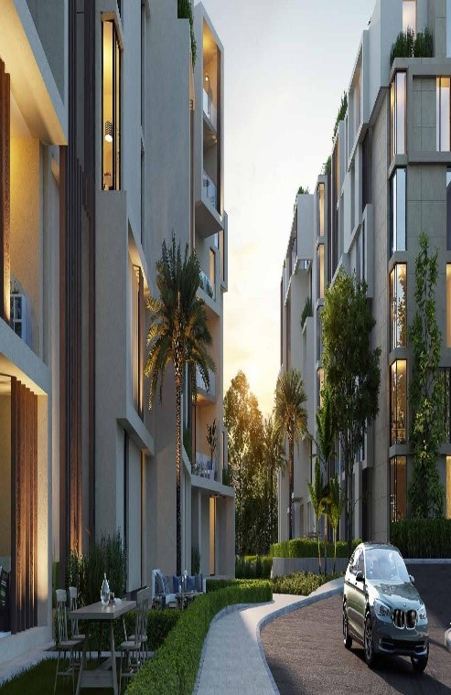

The concept of SODIC Real Estate Development



SODIC works on developing its projects in various Arab countries, including Egypt, the United Arab Emirates and the Kingdom of Saudi Arabia. Its main projects include the construction of luxury residential communities, shopping centers, educational and health facilities, and other high quality real estate projects.
SODIC is characterized by its keen focus on providing a safe and healthy living environment for residents. Keen on customers' comfort, the company provides luxurious and family-friendly housing units. SODIC also strives to apply the highest quality standards in its projects, and works hard to achieve customer satisfaction in all aspects of residential life.
In addition, SODIC promotes sustainable development by providing projects that rely on renewable energy and environmentally friendly modern technology. It is keen to strike a balance between urban development and environmental protection, and works to minimize the environmental impact of its projects.
SODIC Real Estate Development is one of the leading companies in the real estate development sector in the Middle East. Thanks to its commitment to quality and innovation and sustainability, the company continues to be the preferred choice for many clients in the region.
SODIC provides a modern concept for integrated modern housing. The company relies on a strategy based on commitment and quality, and studying the latest real estate market trends. It provides customers with multiple options that satisfy everyone.
The SODIC Real Estate Development Board of Directors is one of the most important factors that make it stand out in the market. It includes highly experienced and distinguished personnel, and strives to maintain its high and prestigious position. The company's management team is characterized by local and global experience, as it also includes international experts and innovative ideas that ensure global quality and leadership.
SODIC Real Estate Development has a long history since its establishment a quarter century ago, during which it has achieved high accomplishments and excelled among market companies. The company has raised the standard of construction in Egypt to the highest levels of quality at all stages of construction.
SODIC continues to build its reputation as a leading and prestigious company in the real estate market, and is always committed to the highest levels of commitment and quality, adopting the latest global technologies. The company provides multiple options that satisfy all needs, which contributes to the comfort and satisfaction of its customers.
Now we will talk about the company's most important projects.

Allegria Sheikh Zayed Compound is an ideal destination for living and investing due to its aesthetic design that achieves the highest levels of luxury and comfort. The latest design methods are used and modern services such as electricity, fresh water and modern systems are provided to ensure residents' comfort.
Allegria Sheikh Zayed Compound offers many advantages and services that investors can enjoy. The compound provides the highest levels of security through top-level trained security and guard services. Surveillance cameras are distributed throughout the compound to ensure safety and security.
Allegria Sheikh Zayed Compound also contains a variety of comfortable facilities such as rooms dedicated to servants and others for studying. The compound also provides swimming pools of various sizes and shapes to suit children and adults, in addition to vast green areas that provide a calm and comfortable environment for residents.

Just minutes from the heart of 6th of October City, the elegant and distinctive October Plaza Compound is located. This residential project is one of the newest and most luxurious residential complexes in the city, with all units designed in a unique style over spacious areas with stunning views of the green spaces and water features within the compound.
In addition to the stunning unit designs, October Plaza Compound offers comprehensive service features that meet residents' basic needs. The project includes a sports club, swimming pool, children's area, jogging and walking areas. It also provides a variety of restaurants, cafes and shops for residents to enjoy a fun and relaxing dining or shopping experience.
Buyers can explore the different activities offered by the residential and commercial complexes surrounding October Plaza Compound, with many famous brand stores, restaurant chains, cafes and health resorts available. Residents can also enjoy organizing barbecue parties in the areas designated for that within the compound.

The Sky Condos project combines a strategic location, luxurious design and comprehensive basic services, providing residents with comfort and luxury. New Cairo's Fifth Settlement is located in the New Cairo area and is known for having several luxury residential neighborhoods and compounds that meet all the needs of modern life.

VYE SODIC is located in the heart of Sheikh Zayed City and consists of diverse residential units in addition to great facilities and luxury services. The project is characterized by a strategic location, as it is just minutes away from the Egyptian capital Cairo and the Third Ring Road. It also enjoys proximity to restaurants, shops, schools, hospitals and major commercial areas.
VYE SODIC Compound in Sheikh Zayed provides residential units designed to meet customers' needs, providing all necessary services and facilities. In addition, the project's location is suitable for living and enjoying, as it provides easy access to all vital facilities.
By investing in VYE SODIC Compound in Sheikh Zayed, investors can take advantage of a great opportunity to live in an elegant and tranquil urban environment, while at the same time benefiting from the diverse services and luxurious facilities available in the project.

Eastown Compound is located on Road 90, near the American University in New Cairo. It is distinguished by its beautiful and unique architectural design, and provides apartments for sale with diverse designs.
The apartments in Eastown Compound are divided into duplexes, with areas starting from 130 square meters up to 220 square meters, while the area of the villas ranges from 245 square meters to 316 square meters. The units are characterized by direct overlooking of green spaces and artificial lakes.
Eastown Compound is distinguished by providing basic facilities and services for comfortable and luxurious living. The project is equipped with paved paths for people with special needs, a sewage, gas and electricity network of the highest quality. Electronic gates and entrances have also been provided to facilitate entry and exit and ensure privacy and security for residents.